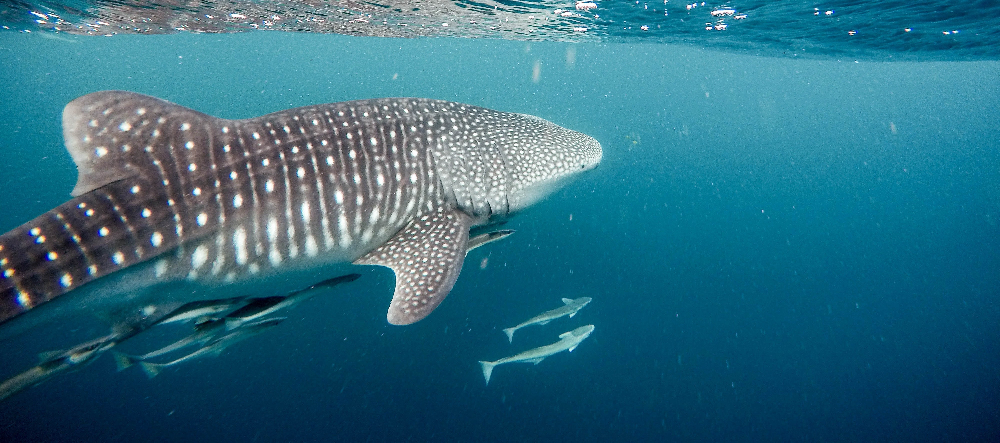

Will be entering my senior year at college this fall (2021)
Biology major at Juniata College
Experienced in field and lab research from internships and coursework
Planning to pursue a doctoral degree in marine biology
Past Experiences
Duke University - Nicholas School of the Environment
Summer 2020
As an NSF REU intern, I explored how genetic differences may allow the Atlantic killifish to survive in polluted water
Uniformed Services University of the Health Sciences
Summer 2019
As an intern, I helped investigate the effects of ketamine on stress hormone levels and long-term fear memory by using rats as a model organism
College Activities
Student Alumni Association
Have been the president since the fall of 2019
Juniata College chapter of the American Fisheries Society
Will be the treasurer for the 2021-2022 academic year
Juniata College chapter of The Wildllife Society
Juniata Activities Board
and Peer2Peer Network
Active member of the clubs
Hobbies
Running, hiking, and walking in nature
Stand-up paddleboarding and kayaking
Digital art and 3D printing
Aquascaping and indoor gardening
Drawing and calligraphy